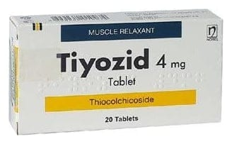

Tiyozid 4 mg Tablet, 20 Adet

Ne için kullanılır
KT · Bölüm 1TİYOZİD, tablet formunda olup 4 mg tiyokolşikosid etkin maddesini içerir. 20 tabletlik blister ambalajlarda, sarı renkli, yuvarlak, bombeli, bir yüzü 4 baskılı, çentiksiz tabletlerdir.
TİYOZİD esas olarak kas gevşetici etkinliğe sahiptir. TİYOZİD, yetişkinlerde ve 16 yaştan itibaren ergenlerde ani ortaya çıkan omurilik kaynaklı ağrılı kas kasılmalarının ek tedavisinde kullanılır.